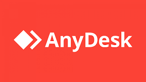

1. TeamViewer
TeamViewer es una herramienta popular para acceder remotamente a computadoras y dispositivos.

TeamViewer es una herramienta popular para acceder remotamente a computadoras y dispositivos.
AnyDesk es una plataforma ligera y rápida para acceder remotamente a equipos.
